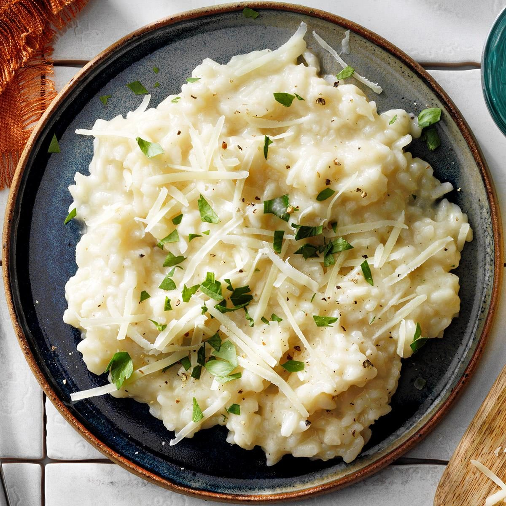

Parmesan Risotto

Parmesan Risotto
This dish is not only guaranteed to taste delicious, but it also sounds impressive.
Your guests will be delighted, and will be fooled into thinking that you spent
hours of your time slaving over a hot stove. In reality, this dish is incredibly
easy to make, whether you are a seasoned chef or new to the world of cooking.
- 2 cups Aborgio Rice
- Medium Yellow onion (diced)
- 3 cloves Garlic
- 1 stick Butter
- 1 cup White wine (dry)
- Salt and black pepper to taste
- 8 cups Chicken (or vegetable) stock
- 2 cups Parmesan cheese
- Extra Virgin Olive Oil
- Heat the stock on the stove on medium heat.
- In a large pan, add 3 to 4 tablespoons of olive oil and half of the stick of butter. Stir on medium heat
- Add the onion pieces. Stir.
- While the onions cook, cut the garlic cloves up into small pieces.
- Add the garlic in with the cooking onions. Stir. Cook until translucent
- Add the rice in. Stir until coated.
- Cook for 2 – 3 minutes or until “crackling.”
- Add about 1 cup of the wine. Stir.
- Add 2 ladles of the hot chicken stock to the risotto (rice mix). Stir slowly
- Add salt and pepper to taste
- Add a handful of parmesan cheese. Stir
- Ensure there are no clumps.
- Add another 2 ladles of stock. Stir.
- Repeat this process 2 more times.
- Once the risotto is nice and creamy, turn the heat off.
- Add in the other ½ of the stick of butter. Stir until melted.
- Add in almost all of the remainder of the parmesan cheese. Leave a little
for topping later.
- Stir so there aren’t any clumps.
- Scoop the risotto into a serving dish
- Sprinkle parmesan cheese on top. Enjoy!